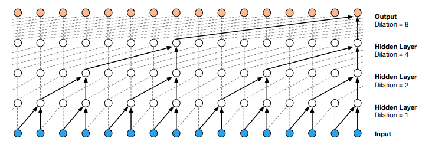
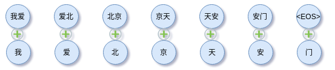

文本分类中的一些Tricks分享
深度学习已经成为 AI 的标配技术，在 NLP 领域更是大放异彩。而NLP中分类任务是应用上最基础的任务，具体包括新闻标题分类、情感倾向性分析、情绪识别、意图识别、关系分类、事件类型判断、语义相似识别等等。本文总结一下文本分类中的一些Tricks。
注：更新了一些内容~
基本架构
文本分类任务基本上沿着如下架构进行，
所有的Tricks基本上都可以归为以上五层之一。一下Tricks的介绍会按照以上五个维度来归类。
数据和标签角度
从输出标签看，包括：二分类、多分类、多标签分类、多示例分类、层次化分类，
- Binary-class text classifcation
- Multi-class text classification
- Multi-label text classification
- Hiearchical (multi-label) text classification (HMC)
从X数据看：
- 关于X：
- 短文
- 长文
- 中英混合（多语言）
- 单语言
从y标签看：
- 关于y：
- 二分类
- 多分类
- 长文多分类
- 多标签分类
- 层次化标签分类
- 正负样本不平衡分类
- 长尾样本分类
类别编码常常使用one-hot表示，例如
是对类别$c_k$的编码，这在NLP或其他领域中的分类任务再普通不过。标签（类别）可以理解成是引导数据压缩的方向的对象，标签平滑是文本分类中常用的tricks，使得原来的onehot变为，
标签平滑是在标签上添加随机噪声，
即在原来onehot基础上添加有一定规则的噪声，如下
事实上，从另外一个角度来说，标签平滑可以看做是标签带有规则的初始化方法。标签平滑看起来没有直接的实现方法，而事实上，使用Tensorflow中的one-hot就可以实现，
1 | tf.one_hot([1, 2, 3, 4, 5], 5, 0.8, 0.2) |
对于长尾标签，某些类别的样本非常少，简单的做法是把它们归为一个新类别：其他。
分类特征、句向量
在输出分类类别前，即softmax计算前，都需要把向量序列转化为单个向量，这个向量称为类别向量、类别特征或者句向量。说白了，分类器，一般是 softmax，但是具体还得看输出，是 multi-label 还是 multi-class 场景。
常见的从词向量序列获取句向量（融合词向量序列为句向量）：
- GlobalMaxPooling
- GlobalAveragePooling
- AttentionPooling
- MultiHeadAttentionPooling
- MinVariacnePooling
- BERT[CLS]
每个时间步的编码特征组成向量序列，
由于RNN的递归编码特点，可以认为最后一个时间步整合了序列的所有信息，因此可以直接用$\boldsymbol{h}_{n}$作为特征。
所有时间步共同处理，直接平均
GlobalMax操作，
对所有时间步的输出进行平均或者使用 Pooling 操作。
AttentionPooling1D是一种值得尝试的方案。假设词向量序列为 $\boldsymbol{X} = \left [\boldsymbol{x}_{1},\boldsymbol{x}_{2},\cdots,\boldsymbol{x}_{n} \right]$ ，有未归一化的权重为，
$\boldsymbol{W}, \boldsymbol{w}$都是可学习的参数。在softmax归一化后有，
因此有，
AttentionPooling1D可以看做是一种注意力机制，只不过是被动注意力机制。它一个好的side effect是可以使用归一化权重$[\lambda_1, \dots, \lambda_n]$作为词或字的重要性权重。这给NLU任务的解释性提供极大的便利。
特征编码器Encoder
从模型出发，深度学习解决文本分类的思路都是特征提取 + 分类器的形式，特征提取过程随着网络层的加深，特征也可以分为：
- 底层特征
- 中层特征
- 高层特征
特征提取的基础模型可能是：
- CNN
- RNN
- 引入 Attention 辅助
- Transformer
此外还有其他各种花式的模型组合可能只停留在创意设计层面吧，工业应用很少。而这些特征提取器的设计可能要关注多个方面：
- 词的上下文情况
- 序列位置
- 长距离
- …
对于长文分类来说，可以尝试使用编码器：膨胀卷积 + 门卷积的结合。
首先是使用CNN作为基本模型，如TextCNN，Yoon Kim 在论文 Convolutional Neural Networks for Sentence Classification 中提出的 TextCNN 是 word-level 的文本分类模型。对于长文本来说，往往要加深卷积层来学习长距离复杂模式。当然，这也会导致每个向量的上下文信息变丰富。
不过这里也有另外一种处理长文的方案，具体是膨胀卷积也称为空洞卷积，在卷积核中插入空洞以扩大感受野而又不增加参数。其卷积过程可以用下图描述，

膨胀大小一般依次取$r=1, 2, 4, 8, 16, \dots$，通过层堆叠且每层按指数扩大膨胀率来获得长距离依赖。取 dilated rate 为 $2^{n}$，n 为层数。膨胀卷积适合处理长序列，如传感器的多维时间序列、长文本等等。像LSTM模型一样，可以给卷积一个Gate，控制信息的流通
注意上式是两个卷积，超参数一致但不共享权重。结合残差，很自然有
不过要注意两者的维度要一致，如果不一致可以通过一定的形状变换技巧处理为一致。注意到，假如$\sigma(\operatorname{Conv}_2(\boldsymbol{X})) \rightarrow 0$上述结构依旧有信息往下游流动，确保信息没有丢失。因此残差结构不仅仅解决梯度消失问题。
以上我们梳理了常见的模型在文本分类中的思路，其实，从整个流程看，选择什么模型并不是最关键，实践中遇到的问题才是最关键。不过总得有个 baseline 吧，如果没有更多的前置条件，我推荐使用 CNN，够快，单位时间内可以做更多的尝试。可能做最后为提高指标走火入魔引入了 ensemble，这时需要拉自己一把，从 bad case 中找问题。
Embedding与词汇信息融入（更新）
从Embedding角度：
- 字Embedding
- 词Embedding
- 字词混合Embedding
- PositionEmbedding（绝对位置编码、SinCosEmbedding、ComplexEmbedding）
- RegionEmbedding
- GlyphEmbedding（使用字形信息）
- char-ngrams
融入bi-ngrams，如下叠加，

或者直接添加到tokens序列后面。类似的做法是fastText。
融入word-level信息，

以得到词中有字，字中有词。
Dropout的运用
深度学习模型随着深度的增加，提取的特征也越丰富，但往往伴随着过度参数化，容易导致过拟合，因此引入正则化手段来缓解过拟合提生模型的泛化能力相对重要。Dropout是一种常用的手段。
Dropout在网络的训练阶段，随机丢弃部分神经元的输出，可以达到避免过拟合的目的。具体做法如下
其中m采样自伯努利分布，
dropout 可以看做是有意引入的噪声，加大模型的学习难度，提高模型的鲁棒性。此外，dropout 有集成学习的解释，是同一样本多次预测的平均。在计算上比常规意义上的集成学习更节省计算资源。所以，在很多任务中，dropout 是值得尝试的方法。基于Numpy的Python实现如下，
1 | import numpy as np |
mask也可以从均匀分布中生成，
1 | def dropout(x, p=0.5, noise_shape=None, training=True): |
以上，Dropout可以理解成一种集成策略，训练阶段Dropout会随机丢弃一定比例的信息，为模型的学习增添难度，这样模型就只能在剩下的信息上学习。由于每次丢弃的信息都是随机的，这样就有效避免模型只学习局部信息进而导致过拟合。在预测阶段，不进行丢弃，而是整合所有的信息。
Dropout一般接在word embedding层后、pooling层后、FC层（全联接层）后。在做baseline时，Embedding后先不要添加dropout，因为你根本就不知道dropout是否会其负作用。如果从一开始就加dropout，那就是默认其起到正作用。注意noise_shape的运用也是很重要的。
类似Dropout的操作就是在Embedding层前随机drop或替换token序列中的若干token。
随机替换tokens
类似于Dropout，对输入的token序列中的若干元素进行随机替换为其他token，也可以当做是一种数据增强手段。效率高的做法是像Dropout一样作为层，而不是在pipeline上写，当然在pipeline写可以使用更灵活的替换逻辑。
然后，这一层放在Input之后，Embedding层之前。
LayerNormalization
LayerNormalization对于模型的性能和收敛速度的影响很关键。LayerNormalization在Embedding层后，加速收敛，结果更稳定。对于NLP任务，BatchNormalization慎用应该慎用，有时候会起到负作用。
LayerNormalization一般可以加在Embedding后，Pooling后，对于分类任务，在softmax前也可以加LayerNormalization，这些操作都可以加快模型收敛。
作为匹配问题
分类问题，尤其是多分类问题，可以看做是文本与标签匹配的问题。然后可以在标签上做数据增强或丰富标签的信息。假设训练好匹配模型$D$，那么类别为，
位置编码
如果编码器是使用CNN类模型，那么可以通过引入位置编码加强CNN模型的位置感。一般使用绝对位置编码即可。假设有词向量序列，其第$i$个为$\boldsymbol{x}_i$，绝对位置编码为一个依赖$i$的函数，其添加所对应位置的词向量上，即
直观点看，

印象中最早是在Facebook的论文Convolutional Sequence to Sequence Learning中提出，这种位置编码只能支持有限长度的文本，因为训练Embedding是需要指定input_dim，那么可支持文本的最长长度就固定下来了。
分词 or 不分词？
分词，对于中文场景来说，是一件让人头痛的事情，往往会引入噪声，在深度学习中可以不分词。一般使用单字，双字比单字大两个数量级。对于单纯的字来说，引入词能够带来词汇信息，缓解字Embedding表达能力不足的问题。对于单纯的词来说，引入字可以缓解分词引入的噪声以及词Embedding面临的OOV问题。
如果是要引入预训练权重，如word2vec词向量，那么当然要分词，不过要注意分词算法应该是该预训练权重对应的词汇表的分词算法一致。
三种方案：
- char level Embedding
- word level Embedding
- char level Embedding与word level Embedding混合使用
分词的好处：
- 分词可以引入预先训练好的向量，但是需要注意注意分词准确性与词向量是否匹配
- word level embedding可以补充char level embedding表达力不足的问题
字词混合好处：
- 字词混合我的理解是平摊分词带来的噪声的引入
| 方案 | 优点 | 缺点 |
|---|---|---|
| char level Embedding | / | / |
| word level Embedding | 分词可以引入预先训练好的向量，但是需要注意注意分词准确性与词向量是否匹配；word level embedding可以补充char level embedding表达力不足的问题 | 不好的分词引入噪声；Embedding较char level Embedding大 |
| char level Embedding与word level Embedding混合使用 | 字词混合我的理解是平摊分词带来的噪声的引入 | Embedding更大 |
总结
此外，还有很多Tricks，如权重平滑、数据增强、提前停止（EarlyStopping）、引入Loss（Focal Loss、Triplet Loss等等）、对抗学习、多任务学习。
除了以上Tricks，深度学习调参路漫漫，还需考虑优化器、参数初始化、学习率调整、批量大小、激活函数、数据预处理与扩充、正则化，这些都是Tricks。总之就是多实践多尝试吧。
参考
[1] Convolutional Neural Networks for Sentence Classification
[2] Text Classification Algorithms: A Survey
[3] nndl.github.io
[4] https://www.aclweb.org/anthology/C14-1008/
[5] https://en.wikipedia.org/wiki/Naive_Bayes_classifier
[6] 《集体智慧编程》
[7] https://en.wikipedia.org/wiki/Multinomial_logistic_regression
转载请包括本文地址：https://allenwind.github.io/blog/8487
更多文章请参考：https://allenwind.github.io/blog/archives/